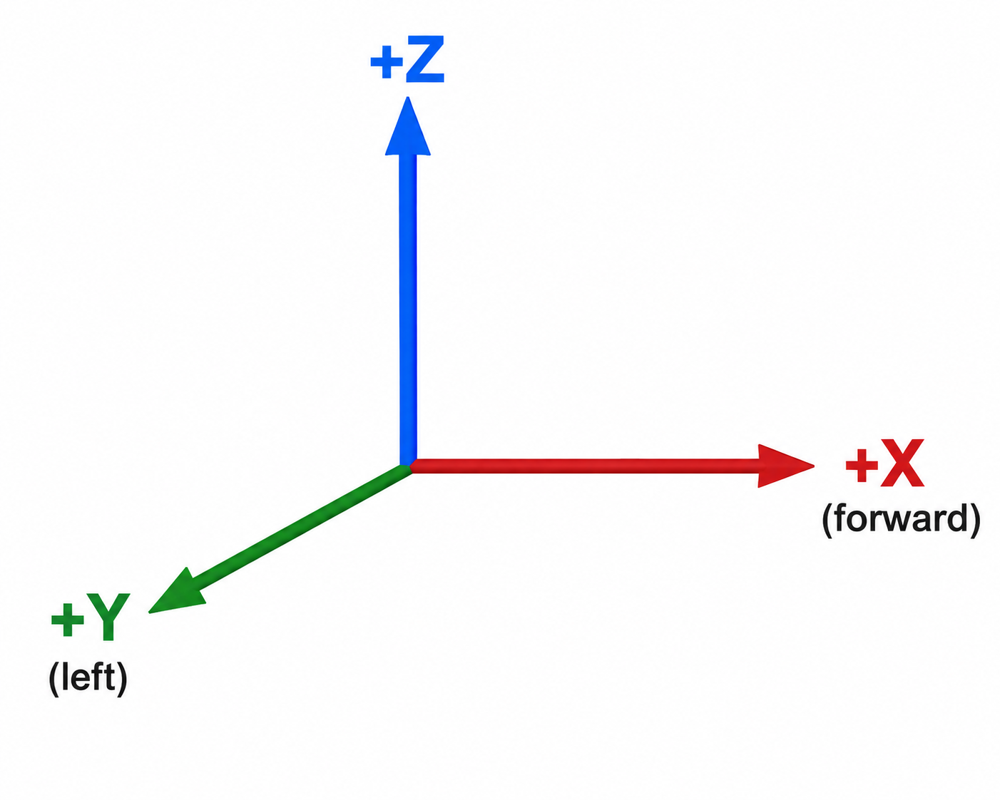

OrbiRob, gerçek robot üzerinde gerçekleştirilen uygulamaların yanı sıra, ROS 2 ve Gazebo kullanılarak benzetim ortamında da geliştirilebilir ve test edilebilir. Gazebo, robotun fiziksel hareketlerini ve sensörlerini sanal bir ortamda modelleyerek, gerçek donanıma ihtiyaç duymadan ROS 2 tabanlı uygulamaların geliştirilmesine, denenmesine ve doğrulanmasına olanak sağlar. Bu sayede özellikle hareket, algılama, haritalama, navigasyon ve otonom robot uygulamaları güvenli ve kontrollü bir ortamda test edilebilir.
Benzetim ortamında OrbiRob’u kullanabilmek için gerekli **URDF/Xacro model dosyaları** ile Gazebo yapılandırma ve başlatma dosyaları OrbiRob yazılım paketi içerisinde sunulmaktadır. Bu dosyalar; robotun fiziksel yapısını, eklemlerini, sensörlerini ve diğer bileşenlerini tanımlayarak OrbiRob’un ROS 2 ve Gazebo ile birlikte çalışmasını sağlar. İlgili paketler kurulduktan sonra OrbiRob, Gazebo içerisinde sanal bir robot olarak çalıştırılabilir ve ROS 2 tabanlı uygulamalar gerçek robotta olduğu gibi geliştirilebilir ve test edilebilir.
| ROS 2 Arayüzü | İşlev | Gerçek OrbiRob | Benzetim |
| /cmd_vel | Robot hareket komutu | OrbiRob kontrol sistemi | Gazebo / ros2_control |
| /joint_states | Tekerlek ve eklem durumları | Pico / donanım arayüzü | Gazebo / ros2_control |
| /odom | Tekerlek odometrisi | Gerçek tekerlek verileri | Gazebo / diferansiyel sürüş kontrolcüsü |
| /scan | LiDAR tarama verisi | RPLIDAR sürücüsü | Gazebo LiDAR sensörü |
| /camera/… | RGB-D kamera verileri | Orbbec Gemini 335L sürücüsü | Gazebo RGB-D kamera |
| /pico/proximity/distances_mm | SHARP mesafe sensörleri | Pico üzerinden gerçek sensörler | Gazebo sensörleri / uyumluluk katmanı |
| /tf, /tf_static | Koordinat çerçeveleri | Gerçek robot TF ağacı | Gazebo / robot tanımı |
| /pico/encoder_ticks | Ham tekerlek enkoder verisi | Pico | Simülasyon/uyumluluk katmanı |
| /pico/wheel_velocity | Tekerlek hızları | Pico | Simülasyon/uyumluluk katmanı |
| /pico/motor_command | Düşük seviyeli motor komutu | Pico | Gerekirse simülasyon uyumluluk katmanı |
| /parameter_events | ROS 2 parametre olayları | ROS 2 | ROS 2 |
